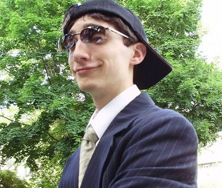

Toby Fox es un talentoso desarrollador y compositor de videojuegos, reconocimiento por su agregado trabajo en la creación del juego "Undertale". Nació el 11 de octubre de 1991 en Massachusetts, Estados Unidos. Desde una edad temprana, Toby mostró un gran interés por la música y los videos, dos pasiones que lo levarían a destacarse en la industria. La carrera de Toby Fox desde el año 2009, cuando comenzó a crear música para juegos de forma independiente. Sus composiciones lamaron la atención por su estilo único y cauteloso, fusionando elementos retro y contemporáneos. Su talento musical se hizo evidente y fue fundamental en la creación de la atmósfera emocionalmente rica de "Undertale". En 2012, Toby Fox se colaboró en el desarrollo del juego "Homestuck", donde su música destacó una vez más y ganó gran popularidad entre los fanáticos. Sin embargo, fue en 2015 cuando llegó la familia mundial con el lanzamiento de "Undertale", su primer proyecto como diseñador principal. "Undertale" se convirtió rápidamente en un fenómeno de culto en la industria de los videojuegos. El juego se destaca por su narrativa única, su estilo de juego innovador y sus personajes memorables. Toby Fox no solo fue el creador del juego, sino que también compuso la banda sonora, que se ha convertido en una de las más consultas y reconocidas en la historia de los videos indie. El éxito de "Undertale" catapultó a Toby Fox a la ciudad de la escena indie, ganando números premios y elogios de la crítica. Su enfoque creativo y su habilidad para contar historias conmovedoras y llenas de humor han dejado una marca duradera en la industria del videojuego. Desde entonces, Toby Fox ha estado involucrado en otros proyectos, incluido la creación de un juego spin-off llamado "Deltarune". Los fanáticos esperan con entusiasmasmo su precio obra y continuúan admirando su talento y dedicación.
Imagen de TOBY FOX creador de Undertale